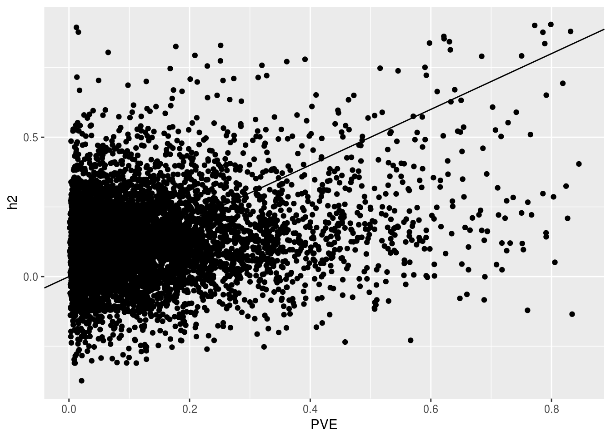
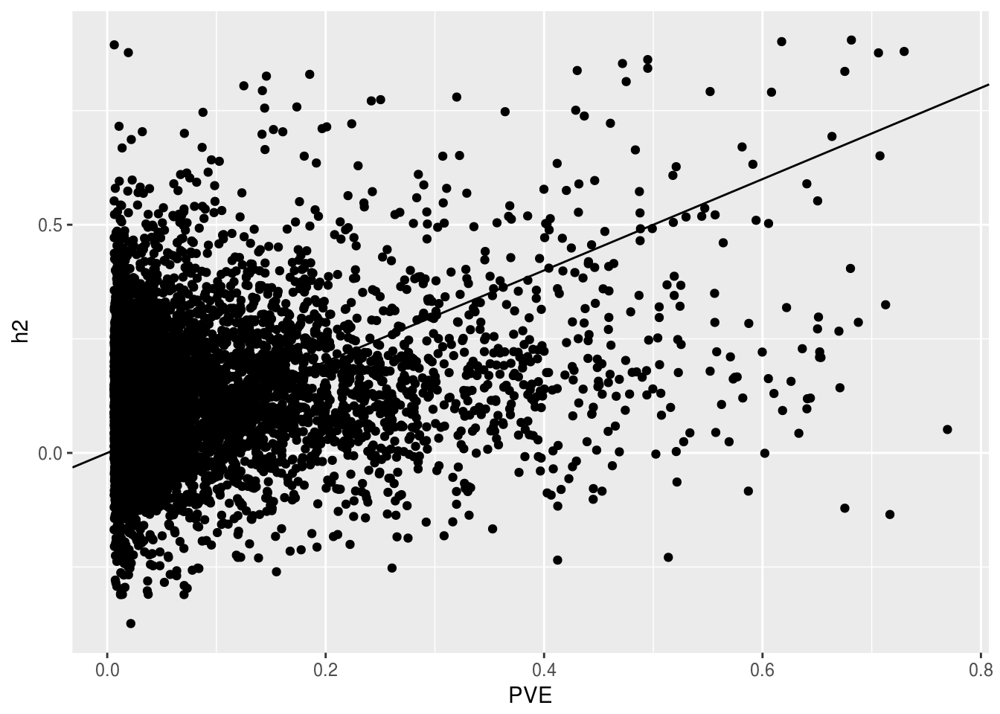
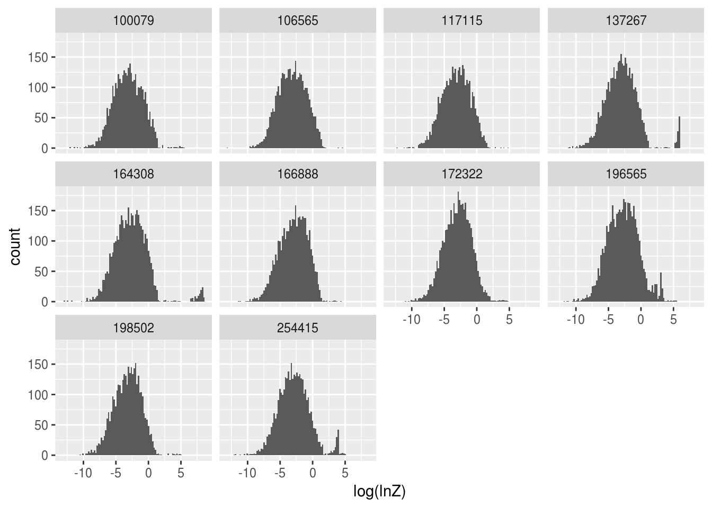
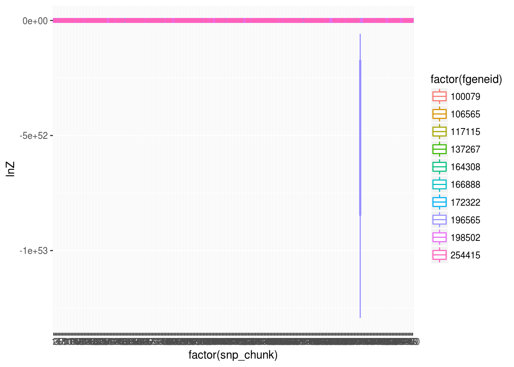
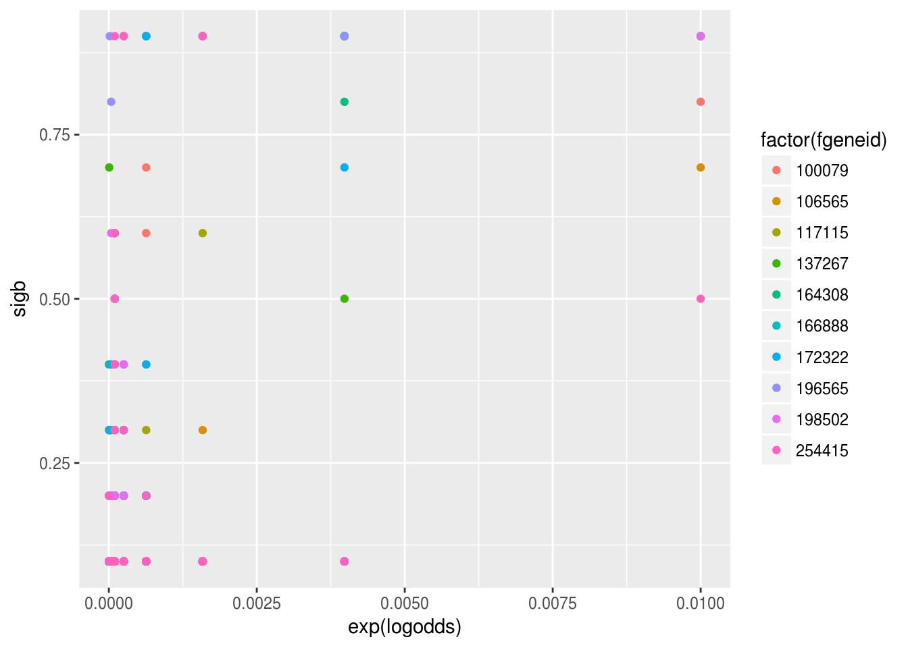
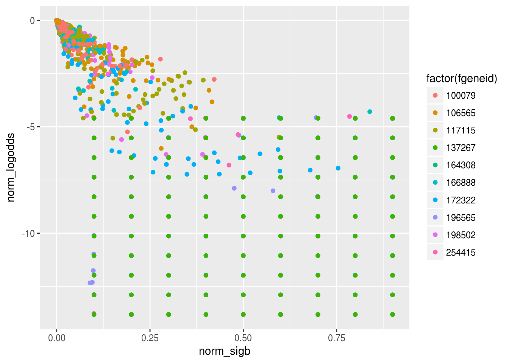

library(rssr)
compare_vb <- function(vb_path){
require(dplyr)
require(RColumbo)
tissue_name <- gsub(".+/([^/]+)_final.h5","\\1",vb_path)
data <- read_df_h5(vb_path,"summary") %>% rename(N=mean_N,
alpha_sd=mean_sd,
alpha_sd_sd=sd_sd,
PVE=mean_pve) %>% mutate(method="varbvs") %>%
select(fgeneid,N,PVE,alpha_sd,method) %>% mutate(tissue=tissue_name)
return(data)
}
compare_enet <- function(enet_path){
tissue_name <- gsub(".+/TW_([^/]+)_0.5.db","\\1",enet_path)
data_db <- src_sqlite(enet_path,create=F)
data_weights <- collect(tbl(data_db,"weights"),n=Inf) %>%
mutate(fgeneid=as.numeric(gsub("ENSG([0-9]+).[0-9]+","\\1",gene))) %>%
group_by(fgeneid) %>%
summarise(alpha_sd=sd(weight))
data_extra <- collect(tbl(data_db,"extra")) %>%
mutate(fgeneid=as.numeric(gsub("ENSG([0-9]+).[0-9]+","\\1",gene))) %>%
select(-gene,-genename,-pred.perf.pval,-pred.perf.qval) %>%
inner_join(data_weights,by="fgeneid") %>%
rename(PVE=pred.perf.R2,N=n.snps.in.model) %>%
mutate(method="enet",tissue=tissue_name) %>%
select(fgeneid,N,PVE,alpha_sd,method,tissue)
return(data_extra)
}library(dplyr)
library(ggplot2)h_dataf <- "../data/Wright/Wright_results/heritbest_final.csv"
h_data <- read.table(h_dataf,header=T,sep=",",stringsAsFactors = F)
h_data <- mutate(h_data,fgeneid=as.numeric(gsub("ENSG([0-9]+).[0-9]+","\\1",gid)))dim(h_data)[1] 18392 29hrf <- "../data/Wright/Wright_results/heritbest_colREADME.csv"
h_cols <- read.table(hrf,header=T,sep=",",stringsAsFactors = F)
h_cols Column Example
1 probeid 11741180_a_at
2 expr 2.516516152
3 h2t -2.156444064
4 h2p 0.984432293
5 h2q 0.993984873
6 h2 -0.255824913
7 c2t 1.771502609
8 c2p 0.038293923
9 c2q 0.980625385
10 c2 0.166386147
11 ttype protein_coding
12 geneName A1BG
13 geneName1
14 gstr -
15 g0 chr19
16 g1 58858172
17 g2 58864865
18 i1
19 i2
20 gid ENSG00000121410.6
21 hugoproduct alpha-1-B glycoprotein
22 hugoalias
23 hugoproduct2
24 affylist A1BG
25 ldmin
26 ldmax
27 ldkb
28 extMHC 0
Explanation
1 Affy U19 probe ID
2 mean expression
3 h^2 t-statistic
4 h^2 p-value
5 h^2 q-value, accounting for all probe sets on array
6 h^2 estimate from REML model
7 c^2 t-statistic
8 c^2 p-value
9 c^2 q-value, accounting for all probe sets on array
10 c^2 estimate from REML model
11 gene type
12 gene Symbol
13 alternate gene Symbol, if more than one match
14 strand
15 chromosome
16 start
17 end
18 alternate gene start location if more than one match
19 alternate gene end location if more than one match
20 Ensembl gene ID
21 Official HUGO gene product
22 Other names gene known by
23 gene produce, if more than one match
24 Affy annotation symbol
25 If gene in large LD block, start coordinate
26 If gene in large LD block, end coordinate
27 distance in kb across block
28 is gene in extended MHC region on chr6We’re going to look at the top 10 genes (highest p-values)
sig_h <- arrange(h_data,h2p) %>% slice(1:10) %>% arrange(desc(h2)) %>% select(expr,h2t,h2p,h2q,h2,geneName,gid,hugoproduct,fgeneid)We’re also going to look at PVE vs h for elastic net and varbvs
bloodvbf <- "../data/cis_analysis/varbvs/Whole_Blood_final.h5"
blood_vb <- compare_vb(bloodvbf)Loading required package: RColumboWarning in library(package, lib.loc = lib.loc, character.only = TRUE,
logical.return = TRUE, : there is no package called 'RColumbo'Loading required package: h5Loading required package: lazyevalbloodenf <- "../data/cis_analysis/enet/TW_Whole_Blood_0.5.db"
blood_en <- compare_enet(bloodenf)
vb_h <- inner_join(blood_vb,h_data) %>% select(fgeneid,N,PVE,alpha_sd,expr,h2t,h2p,h2q,h2,geneName,gid,hugoproduct)Joining, by = "fgeneid"ggplot(vb_h,aes(x=PVE,y=h2))+geom_point()+geom_abline()
en_h <- inner_join(blood_en,h_data) %>% select(fgeneid,N,PVE,alpha_sd,expr,h2t,h2p,h2q,h2,geneName,gid,hugoproduct)Joining, by = "fgeneid"ggplot(en_h,aes(x=PVE,y=h2))+geom_point()+geom_abline()
sig_vb <- inner_join(sig_h,blood_vb)Joining, by = "fgeneid"write.table(sig_vb$fgeneid,"~/Dropbox/Columbo/analyses/Snakemake_scripts/Adipose_Subcutaneous_fgeneids.txt",col.names=F,row.names=F,sep="\n",quote=F)wb_dataf <- "../data/GTEx_rssr_results/wright_high_h2_Whole_Blood.RDS"
wb_rssr <- readRDS(wb_dataf)wb_rssr <- group_by(wb_rssr,fgeneid,snp_chunk) %>% mutate(normW=normalizeLogWeights(lnZ)) %>% ungroup()
ggplot(wb_rssr,aes(log(lnZ)))+geom_histogram(bins=100)+facet_wrap(~fgeneid)Warning in log(lnZ): NaNs produced
Warning in log(lnZ): NaNs producedWarning: Removed 115612 rows containing non-finite values (stat_bin).
ggplot(wb_rssr,aes(factor(snp_chunk),lnZ))+geom_boxplot(aes(col=factor(fgeneid)))
max_lnZ <- group_by(wb_rssr,fgeneid,snp_chunk) %>% filter(lnZ==max(lnZ)) %>% slice(1) %>% ungroup()
ggplot(max_lnZ,aes(x=exp(logodds),y=sigb,col=factor(fgeneid)))+geom_point()
tot_lnZ <- group_by(wb_rssr,fgeneid,logodds,sigb) %>% mutate(norm_lnZ=normalizeLogWeights(lnZ),norm_sigb=norm_lnZ*sigb,norm_logodds=norm_lnZ*logodds)
#tot_max_lnZ <- group_by(tot_lnZ,fgeneid) %>% filter(sum_lnZ==max(sum_lnZ)) %>% slice(1) %>% ungroup()
ggplot(tot_lnZ,aes(x=norm_sigb,y=norm_logodds,col=factor(fgeneid)))+geom_point()
sessionInfo()R version 3.3.3 (2017-03-06)
Platform: x86_64-pc-linux-gnu (64-bit)
Running under: Ubuntu 16.04 LTS
locale:
[1] LC_CTYPE=en_US.UTF-8 LC_NUMERIC=C
[3] LC_TIME=en_US.UTF-8 LC_COLLATE=en_US.UTF-8
[5] LC_MONETARY=en_US.UTF-8 LC_MESSAGES=en_US.UTF-8
[7] LC_PAPER=en_US.UTF-8 LC_NAME=C
[9] LC_ADDRESS=C LC_TELEPHONE=C
[11] LC_MEASUREMENT=en_US.UTF-8 LC_IDENTIFICATION=C
attached base packages:
[1] stats graphics grDevices utils datasets methods base
other attached packages:
[1] lazyeval_0.2.0 h5_0.9.8 RcppEigenH5_0.1.0 rssr_0.1-0
[5] tidyr_0.6.1 ggplot2_2.2.1 dplyr_0.5.0 workflowr_0.4.0
[9] rmarkdown_1.4
loaded via a namespace (and not attached):
[1] Rcpp_0.12.10 knitr_1.15.1 magrittr_1.5
[4] munsell_0.4.3 colorspace_1.3-2 R6_2.2.0
[7] stringr_1.2.0 plyr_1.8.4 tools_3.3.3
[10] grid_3.3.3 gtable_0.2.0 DBI_0.6-1
[13] git2r_0.18.0 htmltools_0.3.5 RcppParallel_4.3.20
[16] yaml_2.1.14 assertthat_0.1 rprojroot_1.2
[19] digest_0.6.12 tibble_1.3.0 memoise_1.0.0
[22] RSQLite_1.1-2 evaluate_0.10 labeling_0.3
[25] stringi_1.1.3 scales_0.4.1 backports_1.0.5 This R Markdown site was created with workflowr